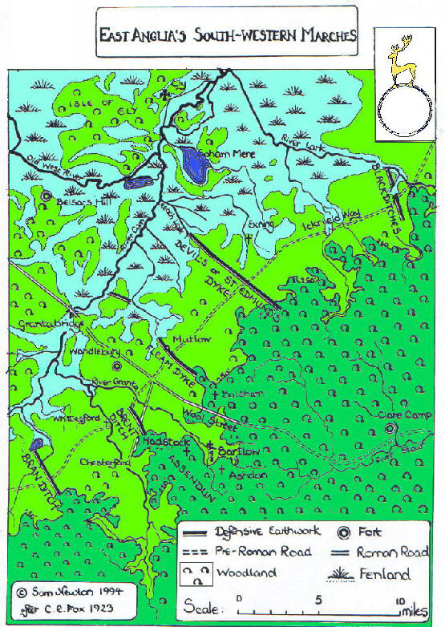

Dykes crossing the Icknield Way
These massive fortifications seem to mark the shifting boundaries of the Anglo Saxon and British territories in East Anglia during the dark ages.
They cut across the Icknield way, an important trade route since Stone age times. The dykes extended from the marshland to the north west across the dry, open country
of the Chiltern hills to the dense forest of the Thames basin. They were built in a sequence from North East to South West (One theory is that they prevented cattle rustling).
This is IMO important, because it shows that this region, while not generally connected in popular imagination with King Arthur, may actually be
important to the legend. If Camelot was actually Camulodunum, then the fall of Camelot may actually have been part of an extremely bloody and genocidal conquest of South East England
(DNA evidence shows that men in the south east of England have inherited around 30% of their ancestry from people of West German origin).


 Devil's ditch/dyke (not to be confused with other
similarly named earthworks) Fleam dyke
Devil's ditch/dyke (not to be confused with other
similarly named earthworks) Fleam dyke

Back to main page
Back to Nothing to see here